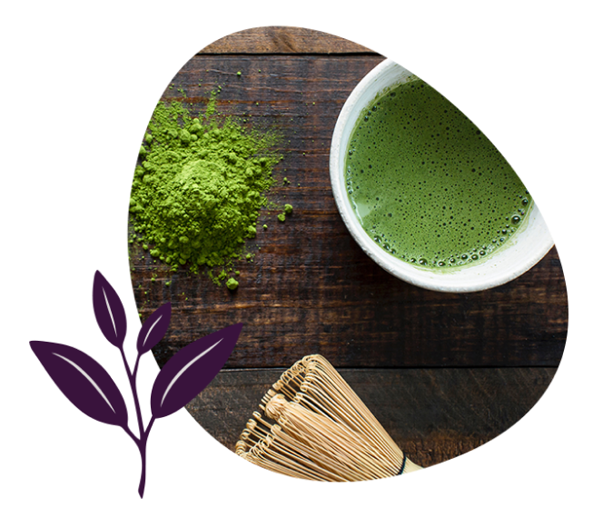

Plato - for more energy, better focus, and a feeling of calm
Busy people love Plato for more energy, better focus, and a feeling of calm
-

-
"Taking Plato every morning gave me an awesome boost of energy for the day. I noticed I was getting less tired, less stressed, and was able to manage more. This nootropic is hands down awesome. I highly recommend it to anyone looking for more energy, mental clarity, better focus, and more zen."
-
"Taking Plato every morning gave me an awesome boost of energy for the day. I noticed I was getting less tired, less stressed, and was able to manage more. This nootropic is hands down awesome. I highly recommend it to anyone looking for more energy, mental clarity, better focus, and more zen."
Inability to focus can ripple into many areas of life, creating a vicious cycle
Plato is a natural, safe, daily habit to help you get out of this cycle.
Making it harder to get off task
Four safe ingredients to target focus, fatigue, and energy drain
-

L-Theanine, 200 mg
the thing in green tea that you love
Reduces temporary anxiety induced by stressful situations.
-
L-Theanine, 200 mg
the thing in green tea that you love
Reduces temporary anxiety induced by stressful situations.
-
L-Theanine, 200 mg
the thing in green tea that you love
Reduces temporary anxiety induced by stressful situations.
-
L-Theanine, 200 mg
the thing in green tea that you love
Reduces temporary anxiety induced by stressful situations.

Two Capsules Daily: Smart self care to reduce the symptoms of stress and help you focus
Your happiness (and ability to focus) are impacted by the amount of stress you experience. In the same way, negative feelings can contribute to physical and chemical stress in the body and brain.
If you don’t have infinite control over your circumstances -- and who does? -- you can end up feeling trapped.
It can feel like you can never get ahead, and never get out from under your stress.
Plato is a simple, daily ritual to help interrupt that cycle.

2 capsules of Plato
Not only does Plato help you adapt to stressful situations, it can help give you the energy and focus to make other positive changes in your life, beginning an upward cycle of change.
Make the first move towards a new base level of calm with Plato.
You could spend thousands of hours researching the perfect safe solution, but we already did
- 3
- 30
- 4
- 18
No, it’s not like the pill from Limitless
Any time you use a supplement, you might wonder if it’s safe.
‘Am I putting the right things in my body?’
That’s why Plato uses the most conservative ingredients possible to get the results that you want.
Noticeably improve your attention, enhance your focus, and support your concentration without the question marks surrounding sourcing or safety.
Plato is effective, but there’s nothing about it that’s too good to be true — just a methodically-researched blend of timeless ingredients.
Plato works, and there’s research to prove it.
"Taking Plato every morning gave me an awesome boost of energy for the day. I noticed I was getting less tired, less stressed, and was able to manage more. This nootropic is hands down awesome. I highly recommend it to anyone looking for more energy, mental clarity, better focus, and more zen."